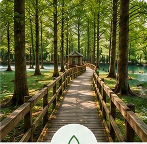
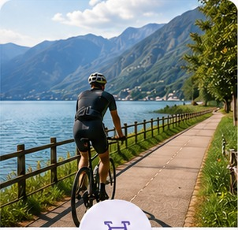
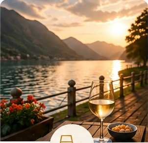
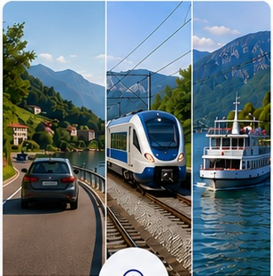
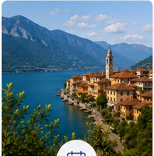
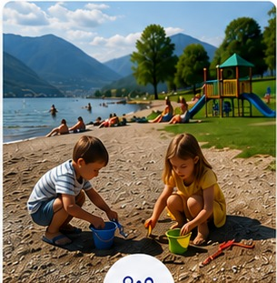
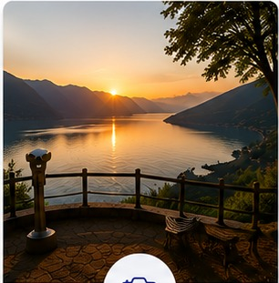
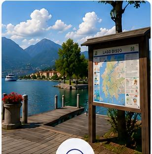

Bosco dei Taxodi
Difficoltà: ★★★★★
Passerella di 300 metri tra i cipressi calvi d'acqua, oasi naturale unica dove il fiume Oglio incontra il lago: adatta anche ai passeggini.
30-45 min

Gemella di Sarnico oltre il ponte di confine, porta d'accesso alla Franciacorta: il Bosco dei Taxodi, la Torre Lantieri e il Viale dei Volti.
Sponda sud-ovest del Lago d'Iseo, in provincia di Brescia, unita a Sarnico da un ponte sul fiume Oglio.
Auto su A4 (uscita Palazzolo sull'Oglio), treno linea Brescia-Palazzolo-Sarnico-Paratico, battello dall'imbarco di Sarnico.
Chi ama la natura del Bosco dei Taxodi, il cicloturismo in Franciacorta e le famiglie con bambini.
Paratico si affaccia sulla sponda sud-ovest del Lago d'Iseo, unita a Sarnico da un ponte sul fiume Oglio, proprio nel punto in cui il fiume incontra il lago. Il nucleo originario sorgeva sulla collina, dove si trovano i resti dell'antico Castello e la Torre Lantieri, restaurata e oggi sede della Quadrisfera, un'installazione multimediale immersiva tra le poche in Italia. Per secoli il territorio fu segnato dalla lavorazione della pietra arenaria grigia, la "Pietra di Sarnico". Oggi Paratico è il punto di partenza ideale sia per il lago sia per la vicina Franciacorta, la terra del vino a pochi minuti di distanza.
Sponda sud-ovest del Lago d'Iseo, unita a Sarnico da un ponte sul fiume Oglio, alle porte della Franciacorta.
Vedi sulla mappaOgni viaggio ha il suo motivo. Scopri cosa rende speciale Paratico in base a ciò che ami davvero.

Passeggia nel Bosco dei Taxodi, percorri il lungolago e scopri gli angoli più verdi dove il fiume Oglio incontra il Lago d'Iseo.

Pedala lungo la ciclabile, esplora la Franciacorta e vivi il lago tra sport acquatici, trekking e itinerari panoramici.

Goditi il ritmo lento del paese, un aperitivo vista lago e le cantine della Franciacorta a pochi minuti di distanza.
Perché visitare Paratico
Da non perdere a Paratico
Pubblicità
Difficoltà: ★★★★★
Passerella di 300 metri tra i cipressi calvi d'acqua, oasi naturale unica dove il fiume Oglio incontra il lago: adatta anche ai passeggini.

Difficoltà: ★★★★★
La ferrovia turistica Paratico-Palazzolo-Iseo, attiva nei weekend di primavera ed estate: un modo insolito per scoprire il territorio.

Difficoltà: ★★★★★
30 km attraverso la Franciacorta, da Brescia fino al lungolago di Paratico: tra vigneti, cantine e borghi storici.

Difficoltà: ★★★★★
Itinerario semplice lungo il fiume Oglio tra Paratico e Palazzolo sull'Oglio, tra natura e archeologia industriale.

Difficoltà: ★★★★★
65 km ad anello lungo tutta la costa del Lago d'Iseo, con partenza e arrivo a Paratico: una full immersion nel Sebino.

Difficoltà: ★★★★★
Dall'antica strada reale (oggi via Cavour) alla Torre Lantieri, fino alle chiese di Santa Maria Assunta e San Pietro, tra scorci panoramici sul lago.

Costruita nel Trecento dalla famiglia Lantieri, restaurata nel 2009 e musealizzata: ospita anche la Quadrisfera, una delle poche installazioni multimediali immersive in Italia.

Oasi naturale unica in Italia dove il fiume Oglio incontra il lago: cipressi calvi d'acqua nordamericani da ammirare su una passerella di 300 metri.

Il collegamento sul fiume Oglio che unisce Paratico a Sarnico: attraversarlo a piedi regala una delle viste più belle sulle due sponde del lago.

Sulla collina che domina il paese, i resti dell'antica fortificazione raccontano l'importanza strategica di Paratico nel Medioevo.

Palazzina in stile neogotico nel Parco Comunale, sede di mostre d'arte contemporanea, con una splendida vista sul lago.

Esposizione permanente di sculture in pietra arenaria, frutto della biennale "Scolpire in Piazza": un museo a cielo aperto tra le vie del paese.
Ex area industriale riqualificata sul lungolago Le Chiatte: fiori e piante, tracce delle antiche rotaie e una fontana scenografica alta 40 metri.

La parrocchiale sorge sulla sommità di un poggio al centro di Paratico, con un bel affaccio panoramico sul paese e sul lago.
Sulla sommità occidentale di Paratico, in un paesaggio agreste: è il cuore della tradizionale sagra della Madöna dei Pom.

Un ampio prato verde in riva al lago, ideale per prendere il sole e fare il bagno, con vista sulla fontana scenografica del parco.

Il tratto di lungolago attrezzato per wakeboard, sci nautico e canoa: la meta ideale per chi cerca adrenalina in acqua.

Noleggia una e-bike per esplorare senza fatica i vigneti e le cantine della Franciacorta, a due passi da Paratico.

Dal vicino imbarco di Sarnico partono le crociere alla scoperta del Lago d'Iseo e delle sue isole.
Lungo la Strada del Vino Franciacorta, le cantine vicine a Paratico propongono visite e degustazioni del celebre metodo classico.
Il lungolago di Paratico offre punti di noleggio per esplorare l'acqua del Sebino su una tavola SUP, anche alle prime armi.
Un percorso tra le sculture del Viale dei Volti e le installazioni del Parco delle Erbe Danzanti, tra i soggetti più fotografati del paese.
L'arenaria grigia cavata sul Mons Romenini è da sempre lavorata a Paratico: un'identità distintiva che oggi vive nelle sculture del Viale dei Volti.

L'8 dicembre, presso la Chiesa di San Pietro, la tradizione vuole che ogni innamorato doni alla sua amata una mela in segno d'amore.

Biennale internazionale d'arte della pietra, a fine giugno degli anni pari: gli scultori lavorano dal vivo in piazza, lasciando le opere in dono al paese.

Ogni agosto il lungolago si anima con la tradizionale gara di pesca, appuntamento sentito dalla comunità di Paratico.

Pubblicità
Lo sapevi? All'interno della Torre Lantieri è installata la Quadrisfera, un sistema di specchi e proiezioni di cui esistono solo altri tre esempi in Italia.
Il parcheggio più comodo è quello della vecchia stazione, proprio accanto al Bosco dei Taxodi, a pagamento. Altri posti auto si trovano lungo il lungolago e vicino al centro storico.
Pochi passi: un ponte sul fiume Oglio collega direttamente Paratico a Sarnico, tanto che ai visitatori sembrano quasi un'unica località.
Sì, al Parco Le Chiatte è presente una zona verde attrezzata per la balneazione in riva al lago, oltre ad aree dedicate agli sport acquatici.
La passerella in legno di 300 metri si percorre comodamente in circa 30-45 minuti, tempo per le foto incluso.
Dalla storica stazione di Paratico, capolinea della linea turistica Paratico-Palazzolo-Iseo, attiva nei weekend di primavera ed estate.
L'imbarco più vicino è quello di Sarnico, appena oltre il ponte, da cui partono le linee di navigazione per le altre località del Lago d'Iseo.
Una torre difensiva del XIV secolo costruita dalla famiglia Lantieri, oggi restaurata e sede della Quadrisfera, un'installazione multimediale che racconta la storia di Paratico, tra le testimonianze di arte e cultura del lago; apertura la prima domenica del mese da giugno ad agosto.
Pesce di lago, piatti della tradizione bresciana e i vini della Franciacorta, di cui Paratico fa parte, si trovano nei ristoranti e nelle trattorie del lungolago.
Circa 22 km da Bergamo (25 minuti in auto) e circa 35 km da Brescia (30 minuti in auto).
Sì: il Bosco dei Taxodi, con le sue passerelle in legno e gli aironi, e il lungolago tranquillo lo rendono un buon punto d'appoggio per famiglie con bambini.
Tutto quello che ti serve per organizzare la visita, in un unico posto.

Raggiungi Paratico in modo semplice e comodo.

Idee e itinerari per vivere il meglio del Lago d'Iseo in ogni stagione.

Il Bosco dei Taxodi, il Parco Le Chiatte con l'area giochi, la pista ciclabile, le gelaterie del centro e il battello da Sarnico: Paratico a misura di famiglia.

Dal Viale dei Volti al Bosco dei Taxodi: i punti più belli per fotografare Paratico e la Torre Lantieri.

Tutto quello che ti chiedi prima di partire.
Da Paratico si scelgono hotel sul lungolago, B&B nel centro storico, agriturismi tra i vigneti della Franciacorta e campeggi per chi ama il pernottamento all'aria aperta.
Caricamento strutture in corso...
La cucina tipica di Paratico alterna il pesce di lago ai sapori della Franciacorta: ristoranti sul lungolago e agriturismi in collina per i prodotti del territorio.
Caricamento ristoranti in corso...
In auto sull'A4 (uscita Palazzolo sull'Oglio), in treno con la linea Brescia-Palazzolo-Sarnico-Paratico, in bus da Brescia, Bergamo e Iseo, o via lago dall'imbarco di Sarnico.
Il più comodo è quello della vecchia stazione, accanto al Bosco dei Taxodi (a pagamento); altri posti si trovano lungo il lungolago e in centro.
L'imbarco più vicino è quello di Sarnico, appena oltre il ponte sull'Oglio, da cui partono le linee di navigazione per il resto del lago.
Da primavera ad autunno: il Bosco dei Taxodi è chiuso da fine gennaio a fine maggio per la nidificazione degli aironi.
Rivatica, Tengattini e Vanzago: le contrade che insieme al capoluogo compongono il comune di Paratico.
Pubblicità